अध्याय 14: सामाजिक न्याय (Social Justice) - कक्षा 11 राजनीति विज्ञान
न्याय क्या है? (What is Justice?)—प्राचीन विचार और आधुनिक संदर्भ
न्याय की अवधारणा मानवीय सभ्यता की सबसे प्राचीन और केंद्रीय नैतिक अवधारणा है। विभिन्न सभ्यताओं में न्याय को व्यवस्था, धर्म और प्रत्येक व्यक्ति के वाजिब हक से जोड़कर देखा गया है।
दार्शनिक संदर्भ: प्राचीन यूनान में प्लेटो की पुस्तक 'द रिपब्लिक' (The Republic) में सुकरात ने स्पष्ट किया कि न्याय का अर्थ केवल मित्रों की भलाई और शत्रुओं का नुकसान करना नहीं, बल्कि 'प्रत्येक व्यक्ति को उसका वाजिब हक (Due) देना' है।
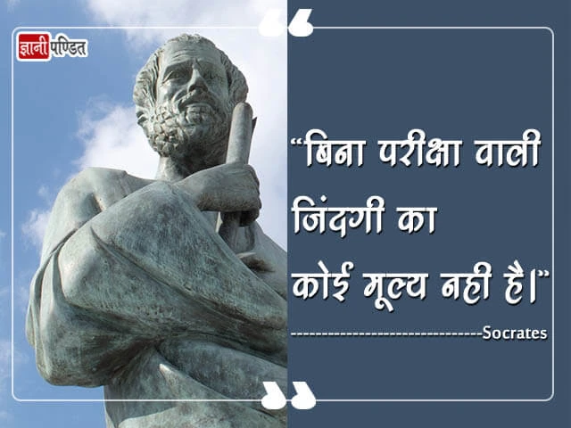
🏛️ सुकरात (Socrates) का न्याय और जीवन दर्शन
सुकरात का कथन: "बिना परीक्षा वाली जिंदगी का कोई मूल्य नहीं है।"
प्राचीन एथेंस के महान दार्शनिक सुकरात ने समझाया कि न्याय केवल समाज के नियमों का अंधानुकरण नहीं है; जब हम अपने विवेक और नैतिकता की निरंतर परीक्षा करते हैं, तभी हम प्रत्येक व्यक्ति के वाजिब अधिकार और न्याय को समझ सकते हैं।
1.1 सामाजिक न्याय के मूलभूत आधार तत्व:
- मानवीय गरिमा का सम्मान: प्रत्येक व्यक्ति को मनुष्य होने के नाते समाज में आदर और गरिमापूर्ण जीवन जीने का मूल अधिकार प्राप्त होना चाहिए।
- अवसरों की समानता: समाज के सभी वर्गों, विशेषकर वंचित और पिछड़े समुदायों को शिक्षा, आजीविका और उन्नति के समान अवसर मिलने चाहिए।
- कृत्रिम भेदभाव का अंत: जन्म, जाति, नस्ल, धर्म और लिंग जैसी जन्मजात असमानताओं पर आधारित विशेषाधिकारों का पूर्ण अंत होना।
- बुनियादी आवश्यकताओं की पूर्ति: न्यायपूर्ण समाज में प्रत्येक नागरिक को भोजन, शुद्ध पेयजल, आवास, बुनियादी शिक्षा और स्वास्थ्य की गारंटी होनी चाहिए।
- कमजोर वर्गों का संरक्षण: समाज के सबसे वंचित, गरीब और शारीरिक रूप से अक्षम लोगों को विशेष संरक्षण और सुरक्षात्मक सहायता प्रदान करना।
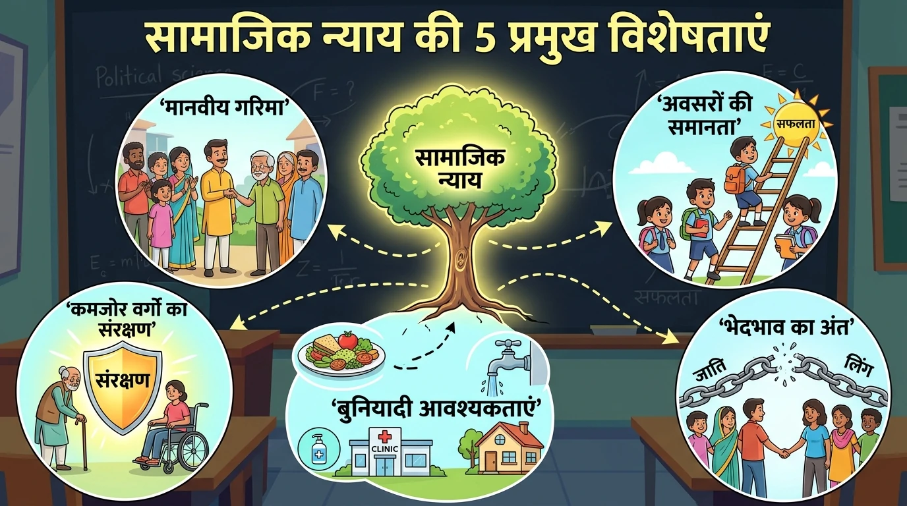
🎨 कार्टून 1 विश्लेषण: सामाजिक न्याय के मूल आधार एवं विचार
चित्र के मुख्य बिंदु:
1. मानवीय गरिमा: प्रत्येक नागरिक को समाज में बिना अपमान के आदरपूर्ण जीवन मिले।
2. अवसरों की समानता: शिक्षा व सफलता की सीढ़ी पर हर वर्ग के बच्चे चढ़ सकें।
3. भेदभाव का अंत: जाति, लिंग और जन्म की बेड़ियों को तोड़कर समानता स्थापित करना।
4. बुनियादी आवश्यकताएं: पौष्टिक भोजन, नल से शुद्ध जल, स्वास्थ्य क्लिनिक और पक्का घर।
5. कमजोर वर्गों का संरक्षण: दिव्यांगों व बुजुर्गों के लिए सुरक्षात्मक ढाल।
न्याय के तीन मूलभूत सिद्धांत (Three Principles of Justice)
न्यायपूर्ण समाज की स्थापना के लिए तीन बुनियादी सिद्धांतों का समुचित संतुलन आवश्यक है:
2.1 समान लोगों के प्रति समान बर्ताव (Equal Treatment for Equals):
- समान नागरिक अधिकार: सभी नागरिकों को बिना किसी भेदभाव के समान मताधिकार, कानून के समक्ष समानता और विचार अभिव्यक्ति की स्वतंत्रता देना।
- समान कार्य के लिए समान वेतन: यदि दो व्यक्ति समान कार्य कर रहे हैं, तो जाति, धर्म या लिंग के आधार पर वेतन में कोई अंतर नहीं किया जा सकता।
- निष्पक्ष कानूनी मापदंड: अदालत और कानून की दृष्टि में धनी और निर्धन दोनों का दर्जा एक समान होना चाहिए।
2.2 समानुपातिक न्याय (Proportional Justice - योग्यता और कार्य के अनुसार फल):
- मेहनत और कौशल का पुरस्कार: यदि कोई व्यक्ति अधिक श्रम, जोखिम या विशेष योग्यता का कार्य करता है (जैसे खदान में काम करने वाला मजदूर या जीवन रक्षक सर्जन), तो उसे अधिक पारिश्रमिक मिलना न्यायसंगत है।
- परीक्षा में मूल्यांकन: कठिन परिश्रम करने वाले विद्यार्थी को अनुत्तीर्ण विद्यार्थी की तुलना में बेहतर ग्रेड मिलना समानुपातिक न्याय का स्पष्ट प्रमाण है।
- उत्पादकता और प्रेरणा: योगदान और प्रयास के अनुपात में पुरस्कारों का वितरण समाज में कार्यकुशलता और निष्पक्षता बनाए रखता है।
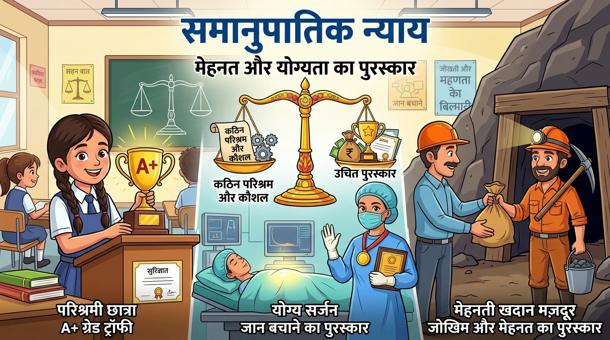
🎨 कार्टून 2.1 विश्लेषण: समानुपातिक न्याय (Proportional Justice)
चित्र का मुख्य संदेश: न्याय का अर्थ केवल सबको एक समान मापना नहीं है। कठिन परिश्रम करने वाली छात्रा को A+ ग्रेड, जान बचाने वाले योग्य सर्जन को मानदेय और जोखिम उठाकर कोयला खदान में काम करने वाले मजदूर को उनकी विशेष मेहनत और जोखिम के अनुपात में उचित पुरस्कार मिलना ही समानुपातिक न्याय है!
2.3 विशेष जरूरतों का विशेष खयाल (Recognition of Special Needs):
- दिव्यांग और वृद्धों के लिए विशेष प्रावधान: शारीरिक रूप से अक्षम लोगों, वृद्धों या गंभीर बीमारियों से पीड़ित लोगों को समाज की मुख्यधारा में लाने के लिए अतिरिक्त रियायतें देना।
- ऐतिहासिक क्षतिपूर्ति: जो समुदाय सदियों से सामाजिक रूप से प्रताड़ित रहे हैं, उन्हें समान धरातल प्रदान करने के लिए सकारात्मक कदम (जैसे आरक्षण) उठाना।
- असमानों के साथ विशेष व्यवहार: यदि समाज में जन्मजात या शारीरिक असमानताएँ हैं, तो उनके साथ बिल्कुल वैसा ही व्यवहार करना जैसा स्वस्थ/सक्षम लोगों के साथ होता है, वास्तव में अन्याय होगा।
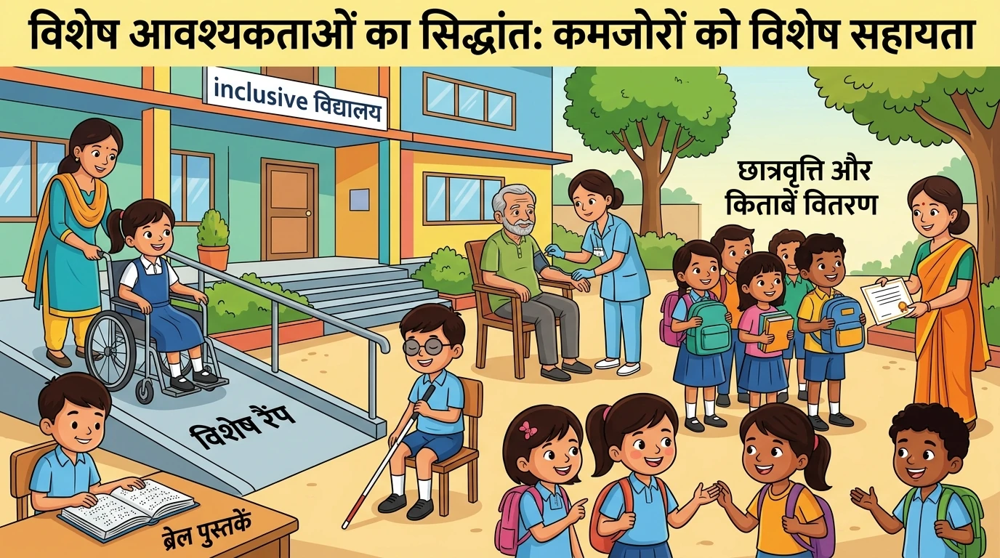
🎨 कार्टून 2.2 विश्लेषण: विशेष आवश्यकताओं का सिद्धांत (Recognition of Special Needs)
चित्र का मुख्य संदेश: यदि समाज में जन्मजात या शारीरिक असमानताएँ हैं, तो उनके साथ सामान्य लोगों जैसा व्यवहार करना वास्तव में अन्याय होगा। दिव्यांग बच्ची के लिए 'विशेष रैंप', दृष्टिबाधित छात्र के लिए 'ब्रेल पुस्तकें', वृद्धजनों के लिए स्वास्थ्य सहायता और गरीब बच्चों को छात्रवृत्ति देकर ही सबको सच्चा समान धरातल मिलता है!
न्यायपूर्ण वितरण (Just Distribution)—संसाधनों और अवसरों का पुनर्वितरण
सामाजिक न्याय केवल कानून के समक्ष औपचारिक समानता से नहीं मिलता; इसके लिए समाज में वस्तुओं, सेवाओं और अवसरों का न्यायसंगत वितरण आवश्यक है।
3.1 न्यायपूर्ण वितरण के प्रमुख आधार व बुनियादी आवश्यकताएं:
- पोषण और भोजन सुरक्षा: सार्वजनिक वितरण प्रणाली (PDS) के माध्यम से समाज के अंतिम व्यक्ति तक भुखमरी मिटाना।
- शुद्ध पेयजल की उपलब्धता: जल जीवन मिशन के तहत हर घर तक स्वच्छ पेयजल की पाइपलाइन पहुंचाना।
- प्राथमिक स्वास्थ्य सुरक्षा: सरकारी अस्पतालों में मुफ़्त दवाएं, उपचार और टीकाकरण सुनिश्चित करना।
- सुरक्षित पक्का आवास: प्रधानमंत्री आवास योजना (PMAY) द्वारा गरीब परिवारों को पक्की छत प्रदान करना।
- मुफ़्त गुणवत्तापूर्ण शिक्षा: सरकारी विद्यालयों के माध्यम से प्रत्येक बच्चे को निःशुल्क व अनिवार्य शिक्षा देना।
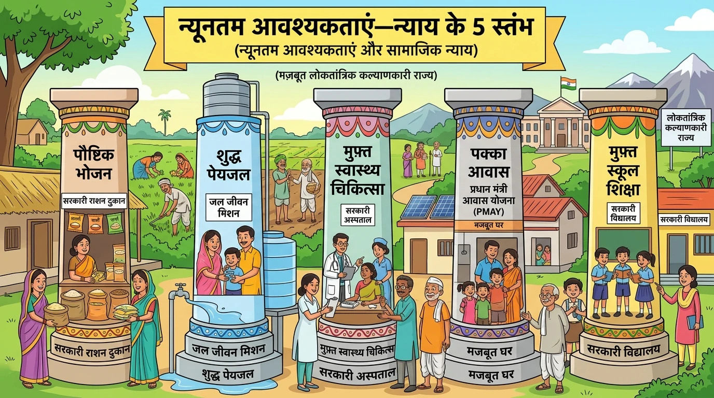
🎨 कार्टून 3 विश्लेषण: संसाधनों का न्यायपूर्ण वितरण और बुनियादी आवश्यकताएं
चित्र का मुख्य संदेश: जब तक प्रत्येक नागरिक को न्यूनतम बुनियादी आवश्यकताएं—पौष्टिक भोजन (राशन), शुद्ध पेयजल, मुफ़्त स्वास्थ्य चिकित्सा, पक्का आवास और मुफ़्त स्कूल शिक्षा—उपलब्ध नहीं होतीं, तब तक कोई भी नागरिक अपनी वास्तविक लोकतांत्रिक स्वतंत्रता का उपभोग नहीं कर सकता।
जॉन रॉल्स का न्याय सिद्धांत—'अज्ञानता का आवरण' (Veil of Ignorance)
प्रसिद्ध अमेरिकी राजनीतिक दार्शनिक जॉन रॉल्स (John Rawls, 1921–2002) ने अपनी पुस्तक 'ए थ्योरी ऑफ जस्टिस' (A Theory of Justice - 1971) में यह सिद्ध किया कि एक निष्पक्ष समाज की स्थापना के लिए किसी आत्म-बलिदान या परोपकार की नहीं, बल्कि शुद्ध 'तर्कसंगत विवेक' की आवश्यकता होती है।
4.1 अज्ञानता के आवरण की मूल अवधारणा (The Core Concept):
- स्वार्थ बनाम निष्पक्षता की समस्या: यदि लोगों को समाज के नियम तय करने को कहा जाए और वे जानते हों कि वे अमीर, सवर्ण या शक्तिशाली हैं—तो वे ऐसे नियम बनाएंगे जो उनके विशेषाधिकारों को बनाए रखें।
- काल्पनिक 'मूल स्थिति' (Original Position): रॉल्स कहते हैं कि कल्पना कीजिए कि समाज के सभी सदस्य एक ऐसे काल्पनिक पर्दे ('अज्ञानता के आवरण') के पीछे बैठे हैं जहाँ उन्हें अपनी वास्तविक पहचान नहीं पता।
- पहचान से पूर्ण अनभिज्ञता: पर्दे के पीछे बैठे व्यक्ति को यह नहीं मालूम कि वास्तविक समाज में उसका जन्म किस परिवार में होगा—वह अमीर होगा या गरीब, उच्च जाति का या दलित, पुरुष होगा या महिला, स्वस्थ होगा या दिव्यांग।
4.2 तर्कसंगत विवेक और सबसे कमजोर की सुरक्षा (Worst-Case Scenario):
- सबसे खराब स्थिति की कल्पना: जब कोई व्यक्ति अपनी भावी पहचान नहीं जानता, तो वह सोचता है: "यदि मैं समाज का सबसे निर्धन या अस्वस्थ व्यक्ति बन गया, तो मेरा क्या होगा?"
- सुरक्षा जाल (Safety Net) का निर्माण: इसलिए, हर तर्कशील व्यक्ति ऐसे नियम बनाएगा जो समाज के सबसे निचले पायदान पर खड़े व्यक्ति को भी गरिमापूर्ण जीवन, मुफ़्त शिक्षा, स्वास्थ्य और न्यूनतम आय की गारंटी दें।
- न्याय परोपकार नहीं, विवेक है: स्वार्थी और तर्कसंगत व्यक्ति भी अपने संभावित बुरे भविष्य की सुरक्षा के लिए निष्पक्षता और न्याय का ही चुनाव करेगा।
4.3 जॉन रॉल्स के न्याय के दो बुनियादी सिद्धांत :
- 1. समान बुनियादी स्वतंत्रता का सिद्धांत: प्रत्येक व्यक्ति को विचार, अभिव्यक्ति, अंतरात्मा और नागरिक अधिकारों की अधिकतम और समान स्वतंत्रता मिलनी चाहिए।
- 2. अंतर सिद्धांत (Difference Principle): समाज में आर्थिक और सामाजिक असमानताएँ केवल तभी स्वीकार्य हैं जब वे समाज के सबसे वंचित और कमजोर वर्ग के अधिकतम कल्याण के लिए काम करें (जैसे आरक्षण व कल्याणकारी योजनाएं)।
- 3. अवसरों की निष्पक्ष समानता: सभी सार्वजनिक पदों और नौकरियों के द्वार समाज के प्रत्येक नागरिक के लिए खुली योग्यता और समान धरातल पर उपलब्ध होने चाहिए।
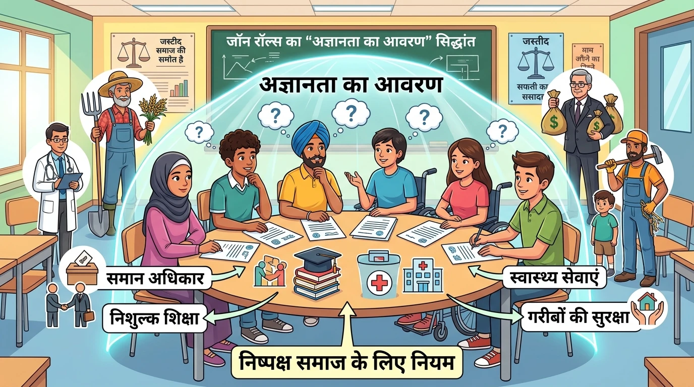
🎨 कार्टून 4 विश्लेषण: जॉन रॉल्स का 'अज्ञानता का आवरण' (Veil of Ignorance)
चित्र का मुख्य संदेश : जब नागरिक अज्ञानता के आवरण के पीछे बैठकर नियम तय करते हैं—और उन्हें यह नहीं मालूम होता कि वे असल जीवन में अमीर होंगे, गरीब, किसान, डॉक्टर या दिव्यांग—तो वे स्वतः ही ऐसे नियम बनाते हैं जो समाज के सबसे निर्बल व्यक्ति के लिए भी सुरक्षित, गरिमापूर्ण और न्यायसंगत हों। यही सामाजिक न्याय का सर्वोच्च दार्शनिक आधार है!
सामाजिक न्याय का अनुसरण—समानता का नैतिक और दार्शनिक आधार
सामाजिक न्याय की स्थापना केवल राजनीतिक नारों से नहीं, बल्कि समाज के सभी नागरिकों को समान नैतिक मूल्य और गरिमा प्रदान करने से होती है।
5.1 समानता के प्रमुख नैतिक व दार्शनिक आधार:
- सभी मनुष्य समान हैं: प्रत्येक मानव में आत्मा और चेतना का समान वास है; जन्म या जाति के आधार पर कोई श्रेष्ठ या हीन नहीं है।
- संवैधानिक व कानूनी सुधार: छुआछूत (अनुच्छेद 17), बंधुआ मजदूरी और जातिगत भेदभाव को कानूनन दंडनीय अपराध घोषित करना।
- आर्थिक पुनर्वितरण: प्रगतिशील कर प्रणाली द्वारा धन के असमान संकेंद्रण को नियंत्रित करना।
- राजनैतिक भागीदारी: वंचित वर्गों और महिलाओं को संसद, विधानसभाओं और पंचायतों में उचित प्रतिनिधित्व देना।
- सामाजिक संवेदनशीलता: समाज के भीतर दूसरों के अभाव और पीड़ा के प्रति सहानुभूति व बंधुत्व का भाव विकसित करना।
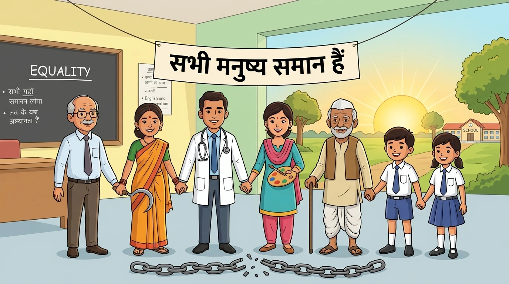
🎨 कार्टून 5 विश्लेषण: समानता का नैतिक आधार—"सभी मनुष्य समान हैं"
चित्र का मुख्य संदेश: डॉक्टर, किसान, शिक्षक, कलाकार, बुजुर्ग और बच्चे—सभी एक ही मानव जाति के अंग हैं। छुआछूत और भेदभाव की बेड़ियों को तोड़कर सभी को समान मानवीय गरिमा और बंधुत्व का अधिकार मिलना ही लोकतंत्र का नैतिक आधार है।
शासकीय संसाधन और कल्याणकारी नीतियां (Welfare Policies of State)
लोकतांत्रिक कल्याणकारी राज्य का प्रमुख कर्तव्य है कि वह करों (Taxes) से प्राप्त आय का उपयोग सामाजिक सुरक्षा और पुनर्वितरण में करे।
6.1 कल्याणकारी वितरण के प्रमुख शासकीय माध्यम:
- सार्वजनिक वितरण प्रणाली (PDS): गरीबों को अत्यधिक रियायती दरों पर राशन (गेहूँ, चावल, दालें) उपलब्ध कराना।
- मुफ़्त स्वास्थ्य सेवाएं: सरकारी अस्पतालों और स्वास्थ्य योजनाओं (आयुष्मान भारत) द्वारा कैशलेस इलाज।
- भूमि सुधार कानून: जागीरदारी प्रथा का अंत कर भूमिहीन किसानों में कृषि भूमि का न्यायसंगत वितरण।
- वृद्धावस्था व दिव्यांग पेंशन: असहाय नागरिकों को मासिक आर्थिक संबल देकर उनके स्वाभिमान की रक्षा करना।
- किसान क्रेडिट व सब्सिडी: लघु एवं सीमांत किसानों को बीज, खाद व बिजली पर सब्सिडी प्रदान करना।
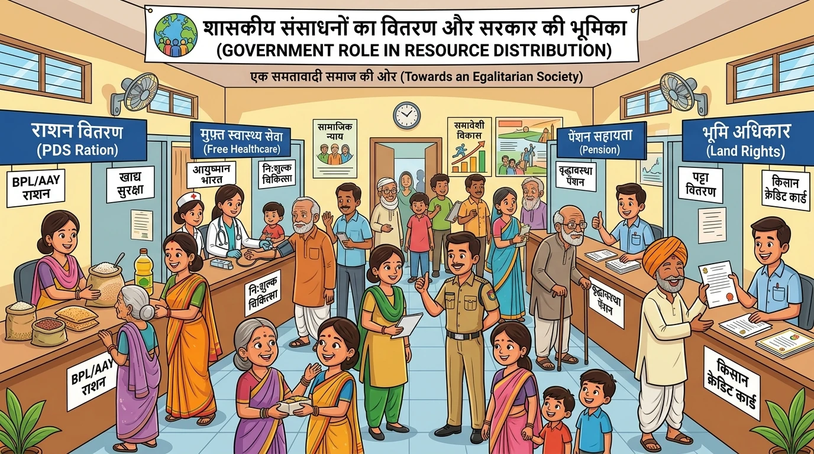
🎨 कार्टून 6 विश्लेषण: शासकीय संसाधन और कल्याणकारी वितरण तंत्र
चित्र का मुख्य संदेश: सरकारी सेवा केंद्र के माध्यम से राशन वितरण (खाद्य सुरक्षा), आयुष्मान भारत (मुफ़्त चिकित्सा), वृद्धावस्था पेंशन और भूमि पट्टा वितरण—यह सभी नीतियां निर्धन नागरिकों को आत्मनिर्भर और सुरक्षित बनाती हैं।
न्याय बनाम दान (Justice vs Charity)—अधिकार बनाम उपकार
न्याय और दान के बीच एक स्पष्ट दार्शनिक अंतर है। न्याय नागरिक का संवैधानिक अधिकार है, जबकि दान किसी व्यक्ति की दया पर निर्भर होता है।
7.1 न्याय और दान में मूलभूत अंतर:
- अधिकार बनाम उपकार: न्याय पाना नागरिक का संवैधानिक हक है, जबकि दान दया या उपकार पर निर्भर होता है।
- समानता और स्वाभिमान: न्याय पाने वाले का स्वाभिमान सुरक्षित रहता है; दान लेने वाला स्वयं को हीन महसूस करता है।
- स्थायित्व और संस्थागत ढांचा: न्याय कानूनों के माध्यम से स्थायी होता है; दान अस्थायी और अनियमित होता है।
- नैतिक दायित्व: टैक्स देना दान नहीं बल्कि समाज के प्रति दायित्व है जिसने धनी वर्ग को फलने-फूलने का अवसर दिया।
- समानता की स्थापना: न्याय समाज में बुनियादी समानता स्थापित करता है, जबकि दान विषमता को बदले बिना केवल तात्कालिक राहत देता है।
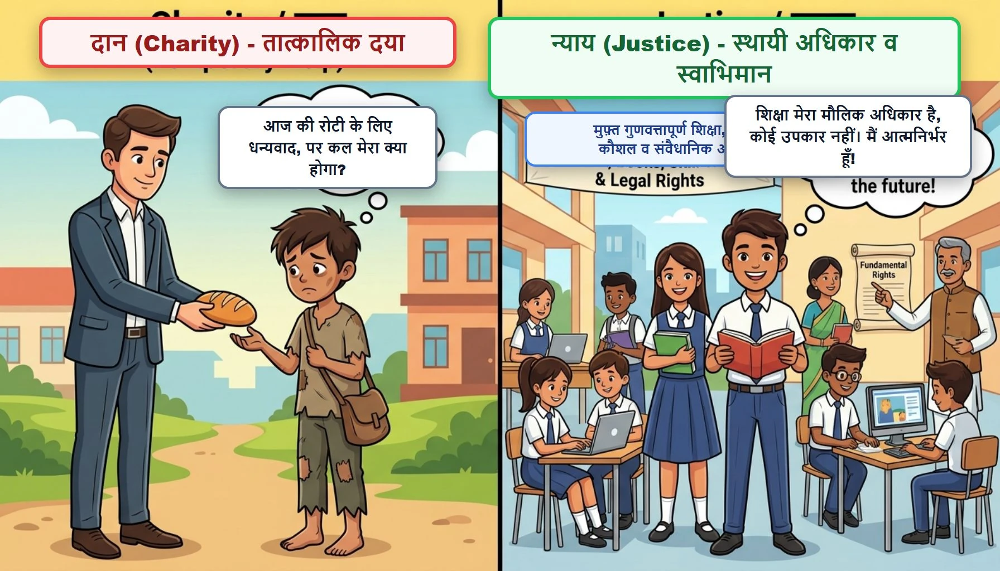
🎨 कार्टून 7 विश्लेषण: दान (Charity) बनाम न्याय (Justice)
दान (Charity): किसी को एक रोटी दान में देना तात्कालिक सहायता है, पर वह व्यक्ति कल फिर भूखा रहेगा और पराधीन बना रहेगा।
न्याय (Justice): मुफ़्त गुणवत्तापूर्ण शिक्षा, कौशल प्रशिक्षण और मौलिक अधिकार देना स्थायी सशक्तिकरण है, जिससे नागरिक स्वाभिमान से अपना भविष्य स्वयं बनाता है!
मुक्त बाजार बनाम राज्य का हस्तक्षेप (Free Markets versus State Intervention)
समकालीन राजनीतिक चिंतन में यह प्रमुख मुद्दा है कि क्या बाजार की खुली होड़ अपने-आप में न्याय दे सकती है या राज्य के हस्तक्षेप की आवश्यकता है?
8.1 बाजार समर्थक बनाम राज्य समर्थक प्रमुख तर्क:
- योग्यता का पुरस्कार (बाजार): बाजार उस व्यक्ति को अधिक लाभ देता है जो अधिक कुशल और रचनात्मक होता है।
- व्यक्तिगत स्वतंत्रता (बाजार): नागरिकों को अपनी पसंद के व्यवसाय और निवेश की पूर्ण स्वायत्तता मिलती है।
- कमजोरों की सुरक्षा (राज्य): बाजार केवल मुनाफा देखता है और निर्धन, दिव्यांग व वृद्धों को पीछे छोड़ देता है।
- बुनियादी सेवाओं का संरक्षण (राज्य): शिक्षा और स्वास्थ्य को बाजार के हवाले करने से वे गरीबों की पहुँच से बाहर हो जाती हैं।
- समान शुरुआती धरातल (Level Playing Field): राज्य रेफरी की तरह कमजोर धावक को जूते व साफ ट्रैक देकर शुरुआत को निष्पक्ष बनाता है।
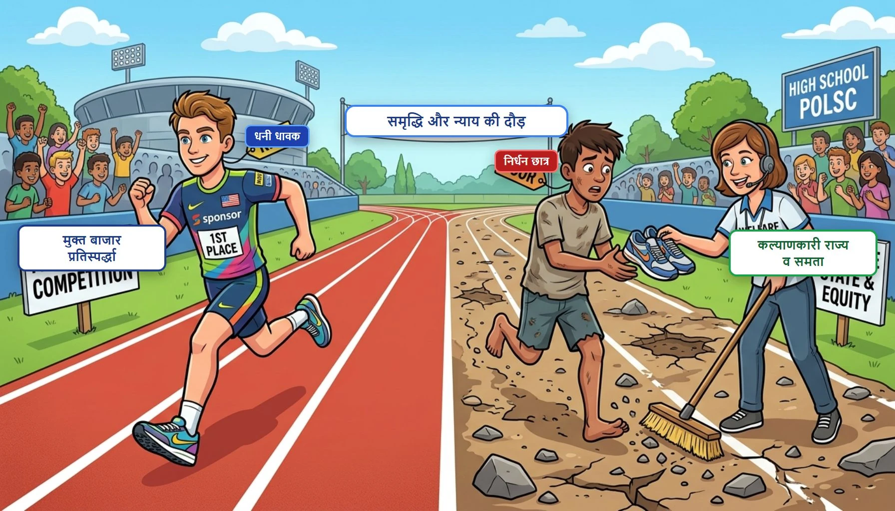
🎨 कार्टून 8 विश्लेषण: क्या बिना समान शुरुआत के दौड़ निष्पक्ष हो सकती है?
चित्र का मुख्य संदेश: मुक्त बाजार समर्थक कहते हैं कि 'नियम सबके लिए समान हैं'। लेकिन जब एक धावक के पास जूते व कोचिंग हो और दूसरा धावक नंगे पांव पथरीले रास्ते पर हो—तो कल्याणकारी राज्य (रेफरी) का हस्तक्षेप जरूरी है ताकि शुरुआत समान (Level Playing Field) हो सके!
भारतीय संदर्भ में सामाजिक न्याय और सकारात्मक कार्रवाई (Affirmative Action)
भारतीय संविधान में सामाजिक न्याय की स्थापना के लिए सकारात्मक भेदभाव और आरक्षण की व्यवस्था की गई है ताकि ऐतिहासिक वंचना को समाप्त किया जा सके।
9.1 सकारात्मक कार्रवाई और आरक्षण के संवैधानिक आधार:
- सकारात्मक भेदभाव (Positive Discrimination): पिछड़े और शोषित वर्गों (SC/ST/OBC) को मुख्यधारा में लाने के लिए विशेष छूट देना।
- ऐतिहासिक क्षतिपूर्ति (Compensatory Justice): उन जातियों को विशेष अधिकार देना जिनका सदियों से सामाजिक शोषण हुआ।
- प्रशासनिक प्रतिनिधित्व: देश की नीति-निर्माण और प्रशासन में सभी सामाजिक वर्गों की पर्याप्त हिस्सेदारी सुनिश्चित करना।
- समानता का धरातल: जब तक सामाजिक विषमता दूर नहीं होती, तब तक औपचारिक मेरिट पूरी तरह बेमानी है।
- संवैधानिक प्रावधान: अनुच्छेद 15(4) और 16(4) राज्य को वंचित वर्गों के उत्थान के लिए विशेष नियम बनाने की शक्ति देते हैं।
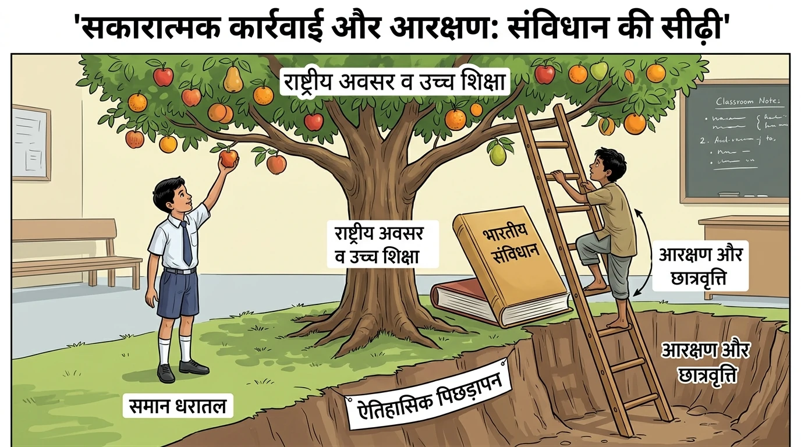
🎨 कार्टून 9 विश्लेषण: सकारात्मक कार्रवाई व आरक्षण—संविधान की सीढ़ी
चित्र का मुख्य संदेश: 'राष्ट्रीय अवसर व उच्च शिक्षा' के फलदार वृक्ष तक पहुँचने के लिए साधन-सम्पन्न छात्र समतल जमीन से सहज ही फल तोड़ लेता है, जबकि ऐतिहासिक रूप से पिछड़ा छात्र गड्ढे में दबा रह जाता है। 'भारतीय संविधान' द्वारा दी गई 'आरक्षण और छात्रवृत्ति रूपी सीढ़ी' उसे बराबर ऊंचाई पर लाकर सच्चा समान अवसर (Level Playing Field) प्रदान करती है!
न्याय और मौलिक मानवाधिकार (Human Rights)
सामाजिक न्याय की रक्षा के बिना मानवाधिकार केवल कागजी आदर्श बनकर रह जाते हैं। न्याय ही वह शक्ति है जो अधिकारों को धरातल पर संभव बनाती है।
10.1 मानवाधिकारों के प्रमुख आयाम:
- गरिमापूर्ण जीवन का अधिकार: गरीबी और भुखमरी से मुक्ति दिलाकर प्रत्येक नागरिक को सम्मानजनक जीवन प्रदान करना।
- शोषण के खिलाफ अधिकार: बाल श्रम, मानव तस्करी और बंधुआ मजदूरी जैसे अमानवीय कृत्यों का पूर्ण उन्मूलन।
- मुफ्त कानूनी सहायता: निर्धन नागरिक को अदालत में वकील और न्याय पाने का निःशुल्क अधिकार (अनुच्छेद 39A)।
- उचित पारिश्रमिक: सभी श्रमिकों को जीवन-यापन के योग्य न्यूनतम मजदूरी और सुरक्षित कार्यस्थल दिलाना।
- वैश्विक मानवाधिकार घोषणा: संयुक्त राष्ट्र (UN) के मानवाधिकार सिद्धांतों को राष्ट्रीय कानूनों में लागू करना।
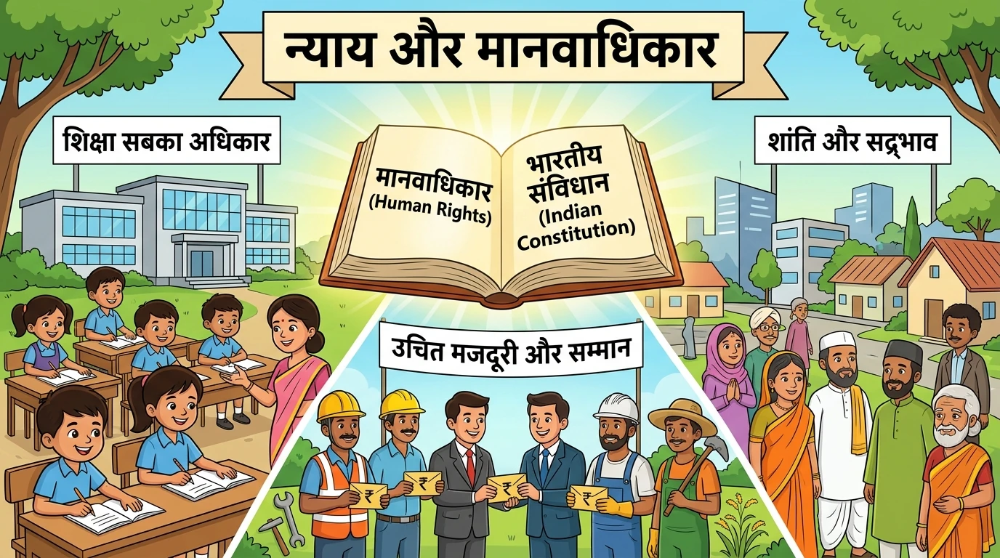
🎨 कार्टून 10 विश्लेषण: न्याय और मानवाधिकार—शोषण-मुक्त समाज का संकल्प
चित्र का मुख्य संदेश: भारतीय संविधान और मानवाधिकारों का घोषणापत्र सुनिश्चित करते हैं कि बाल श्रम समाप्त हो, हर बच्चे को विद्यालय में शिक्षा मिले, श्रमिकों को उचित मजदूरी व सम्मान मिले तथा पूरे समाज में शांति व सद्भाव बना रहे।
अंतरराष्ट्रीय न्याय (International Justice)—राष्ट्रों के बीच संसाधनों का संतुलन
जिस प्रकार एक देश के भीतर सामाजिक न्याय आवश्यक है, उसी प्रकार वैश्विक स्तर पर भी विभिन्न अमीर और गरीब देशों के बीच संसाधनों का संतुलित संबंध होना जरूरी है।
11.1 वैश्विक विषमता के प्रमुख आयाम:
- संसाधनों का असमान नियंत्रण: दुनिया के मुट्ठी भर अमीर देश अधिकांश वैश्विक संपदा और तकनीक पर नियंत्रण रखते हैं।
- विदेशी ऋण का जाल (Debt Trap): विकासशील देशों को दी जाने वाली अंतरराष्ट्रीय वित्तीय सहायता कड़ी शर्तों से बंधी होती है।
- जलवायु परिवर्तन का अनुचित बोझ: प्रदूषण अमीर देशों ने फैलाया, लेकिन सूखे और बाढ़ की मार गरीब देशों के किसान झेलते हैं।
- निष्पक्ष व्यापार नीतियां: विकासशील देशों के कृषि उत्पादों को वैश्विक बाजारों में निष्पक्ष मूल्य और प्रवेश मिलना।
- हरित तकनीक का साझाकरण: पर्यावरण रक्षा के लिए आधुनिक स्वच्छ तकनीक को गरीब देशों को रियायती दरों पर देना।
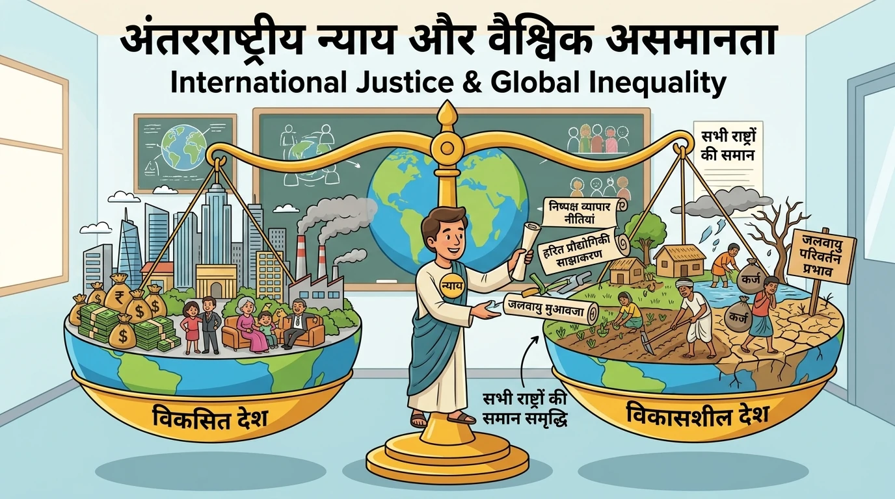
🎨 कार्टून 11 विश्लेषण: अंतरराष्ट्रीय न्याय—राष्ट्रों के बीच संसाधनों का संतुलन
चित्र का मुख्य संदेश: जिस प्रकार देश के अंदर अमीरी-गरीबी का अंतर पाटना न्याय है, वैसे ही अंतरराष्ट्रीय स्तर पर विकसित देशों द्वारा विकासशील देशों को तकनीक हस्तांतरण, जलवायु क्षतिपूर्ति और निष्पक्ष व्यापार शर्तें देना अंतरराष्ट्रीय न्याय कहलाता है।
पर्यावरणीय न्याय (Environmental Justice)
पर्यावरणीय न्याय यह सुनिश्चित करता है कि पर्यावरण के विनाश और प्रदूषण का नुकसान किसी एक गरीब वर्ग को न भुगतना पड़े, और प्राकृतिक संसाधनों का दोहन सतत रूप से हो।
12.1 पर्यावरणीय न्याय के प्रमुख सिद्धांत:
- असंतुलित प्रदूषण का विरोध: औद्योगिक कचरे और विषैले कारखानों को गरीब बस्तियों के निकट स्थापित करने पर रोक।
- सतत विकास (Sustainable Development): प्रकृति का इस प्रकार उपयोग करना कि भविष्य की पीढ़ियों का हक न छीने।
- विस्थापितों का पुनर्वास: बाँधों व खानों के कारण विस्थापित होने वाले आदिवासियों को उचित मुआवजा व पुनर्वास।
- पारिस्थितिकी समानता: शुद्ध जल, स्वच्छ वायु और हरियाली पर अमीर-गरीब का समान प्राकृतिक अधिकार।
- जलवायु न्याय: प्रदूषण फैलाने वाले उद्योगों और राष्ट्रों की अधिक वित्तीय व नैतिक जिम्मेदारी तय करना।
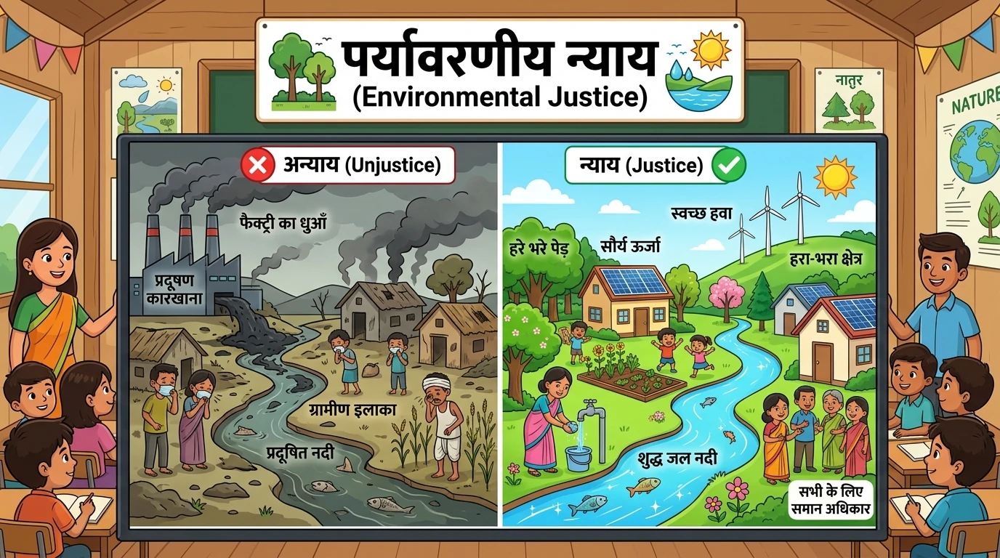
🎨 कार्टून 12 विश्लेषण: पर्यावरणीय अन्याय बनाम हरित न्याय
अन्याय (बाएं): प्रदूषण फैलाने वाली फैक्ट्रियां और गंदा कचरा गरीब बस्तियों पर थोप देना पर्यावरणीय अन्याय है।
न्याय (दाएं): शुद्ध नदी, सौर ऊर्जा, स्वच्छ वायु और हरा-भरा वातावरण समाज के हर वर्ग के बच्चों और नागरिकों का मौलिक अधिकार हैं।
प्रक्रियात्मक बनाम तात्विक न्याय (Procedural vs Substantive Justice)
न्याय की व्याख्या करने के दो प्रमुख दृष्टिकोण हैं, जिनके बीच का संतुलन ही एक वास्तविक कल्याणकारी राज्य का आधार बनता है।
13.1 प्रक्रियात्मक और तात्विक न्याय में अंतर:
- नियमों की निष्पक्षता (प्रक्रियात्मक): यह केवल यह देखता है कि कानून के नियम सबके लिए समान रूप से लागू हैं या नहीं।
- औपचारिक प्रतिस्पर्द्धा (प्रक्रियात्मक): यदि नियम समान हैं तो परिणाम चाहे जो भी हो, उसे न्याय मान लिया जाता है (पूंजीवादी दृष्टिकोण)।
- परिणामों की समानता (तात्विक): यह देखता है कि क्या वास्तव में कमजोरों को न्याय और समान धरातल मिला।
- असंतुलन को सुधारना (तात्विक): यदि एक प्रतियोगी भूखा और साधनहीन है तो समान नियमों से मुकाबला कराना अन्याय होगा।
- सच्चा न्याय: वंचितों के वास्तविक जीवन स्तर को सुधारने के लिए विशेष कल्याणकारी नीतियां लागू करना।
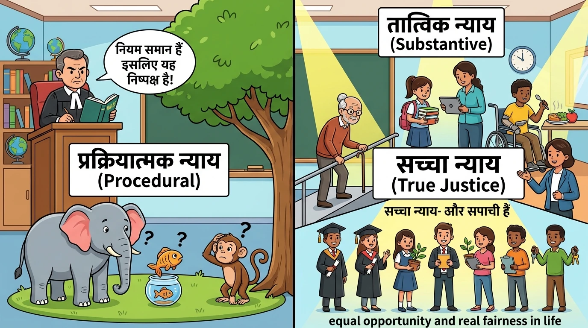
🎨 कार्टून 13 विश्लेषण: प्रक्रियात्मक न्याय बनाम तात्विक न्याय (सच्चा न्याय)
प्रक्रियात्मक न्याय (बाएं): हाथी, मछली और बंदर को पेड़ पर चढ़ने का 'समान नियम' देना औपचारिक रूप से बराबर दिखता है, पर वास्तव में घोर अन्याय है।
तात्विक न्याय (दाएं): बुजुर्ग को रैंप, दिव्यांग को व्हीलचेयर व भोजन और सभी बच्चों को व्यक्तिगत सहायता देकर वास्तविक धरातल पर बराबरी लाना ही सच्चा न्याय है!
लोकतंत्र, मताधिकार और निजीकरण के दौर में सामाजिक सुरक्षा
लोकतंत्र वंचितों को 'वोट की समानता' की ताकत देता है, वहीं आधुनिक निजीकरण के दौर में श्रमिकों को राज्य का 'सुरक्षा कवच' मिलना अनिवार्य है।
14.1 लोकतंत्र व निजीकरण के दौर में सामाजिक न्याय:
- वोट की बराबरी: 'एक व्यक्ति-एक वोट-समान मूल्य' का सिद्धांत अरबपति और निर्धन मजदूर को राजनैतिक रूप से एक समान शक्ति देता है।
- शांतिपूर्ण आंदोलन का अधिकार: शोषित वर्गों को अपनी मांगों के समर्थन में लोकतांत्रिक रैलियाँ व हड़ताल करने की स्वतंत्रता।
- राज्य का सुरक्षा कवच: निजीकरण में ठेका श्रमिकों के शोषण को रोकने के लिए 'न्यूनतम वेतन कानून' व 'स्वास्थ्य बीमा' लागू करना।
- शिक्षा-स्वास्थ्य का संरक्षण: निजी क्षेत्र के विस्तार के बीच भी सरकारी स्कूलों व अस्पतालों को मजबूत बनाए रखना।
- संसदीय जवाबदेही: चुनाव में सरकार को जनता के पास जाना पड़ता है, जिससे वह गरीबों की अनदेखी नहीं कर सकती।
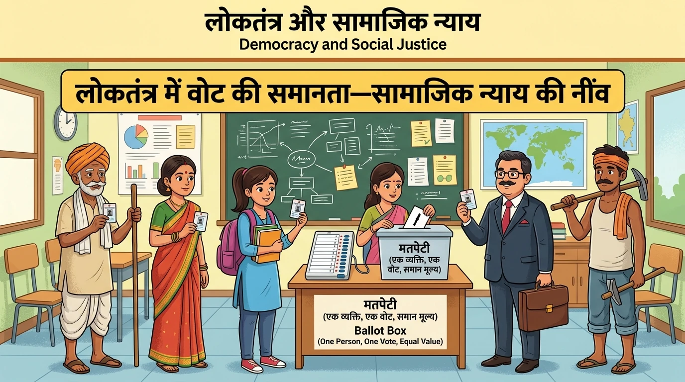
🎨 कार्टून 14.1 विश्लेषण: लोकतंत्र में समानता और मतपेटी की शक्ति
चित्र का मुख्य संदेश: लोकतांत्रिक मतदान केंद्र पर धनी उद्योगपति, साधारण किसान, गृहिणी, छात्रा और मजदूर—सभी एक ही कतार में खड़े हैं। 'एक व्यक्ति, एक वोट, समान मूल्य' का यह सिद्धांत सामाजिक न्याय की सबसे मजबूत ढाल है।
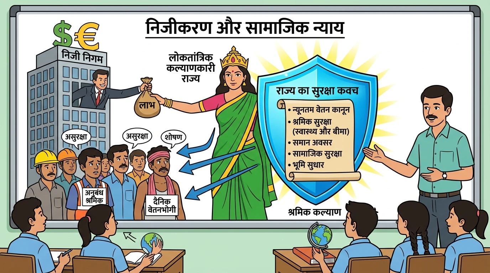
🎨 कार्टून 14.2 विश्लेषण: निजीकरण के दौर में कल्याणकारी राज्य का सुरक्षा कवच
चित्र का मुख्य संदेश: निजीकरण व कॉर्पोरेट मुनाफे की होड़ में अनुबंध श्रमिकों और दैनिक वेतनभोगियों को असुरक्षा व शोषण से बचाने के लिए कल्याणकारी राज्य 'न्यूनतम वेतन कानून' व 'श्रमिक स्वास्थ्य बीमा' की सुरक्षात्मक ढाल (सुरक्षा कवच) प्रदान करता है।
लैंगिक न्याय, न्यायपालिका की भूमिका और नैतिक संकल्प (निष्कर्ष)
सामाजिक न्याय की पूर्णता लैंगिक समानता, न्यायपालिका की सजगता (PIL) और "सत्यमेव जयते" के नैतिक संकल्प में निहित है।
15.1 निष्कर्ष के प्रमुख बिंदु:
- लैंगिक न्याय (Gender Justice): महिलाओं को समान कार्य का समान वेतन, पैतृक संपत्ति में बराबर हक और पंचायतों/संसद में उचित प्रतिनिधित्व दिलाना।
- जनहित याचिका (PIL) और अदालतें: एक साधारण पोस्टकार्ड या याचिका द्वारा समाज के अंतिम व्यक्ति के अधिकारों की रक्षा करना।
- राष्ट्रीय एकता और बंधुत्व: "हम, भारत के लोग..." — जब हर वर्ग को न्याय मिलता है तभी राष्ट्र की एकता और अखंडता सुरक्षित रहती है।
- नैतिक संवेदनशीलता: न्याय केवल अदालती कानून नहीं, बल्कि हमारी सामाजिक अंतरात्मा में दूसरों के दुख को समझने का संकल्प है।
- सर्वोच्च संदेश: "सत्यमेव जयते" और "न्याय ही धर्म है"—यही इस पूरे अध्याय का अंतिम और शाश्वत संदेश है।
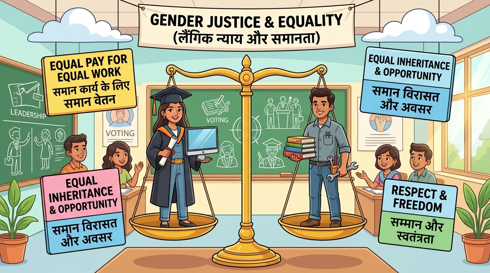
🎨 कार्टून 15.1 विश्लेषण: लैंगिक न्याय (Gender Justice) और समान अधिकार
चित्र का मुख्य संदेश: सच्चा सामाजिक न्याय तब संभव है जब समाज और कानून के तराजू पर बालक और बालिका दोनों को समान सम्मान, समान शिक्षा, समान कार्य का समान वेतन और संपत्ति का बराबरी का अधिकार मिले।
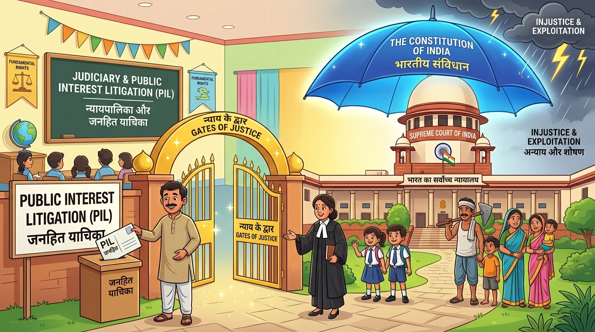
🎨 कार्टून 15.2 विश्लेषण: संविधान की छतरी और जनहित याचिका (PIL)
चित्र का मुख्य संदेश: भारतीय संविधान और न्यायपालिका देश के निर्धनतम नागरिक, मजदूर, बच्चे और किसानों के लिए एक सुरक्षात्मक छतरी का कार्य करते हैं। एक साधारण पोस्टकार्ड (PIL) भी शोषण और अन्याय के खिलाफ न्याय के द्वार खोल सकता है!
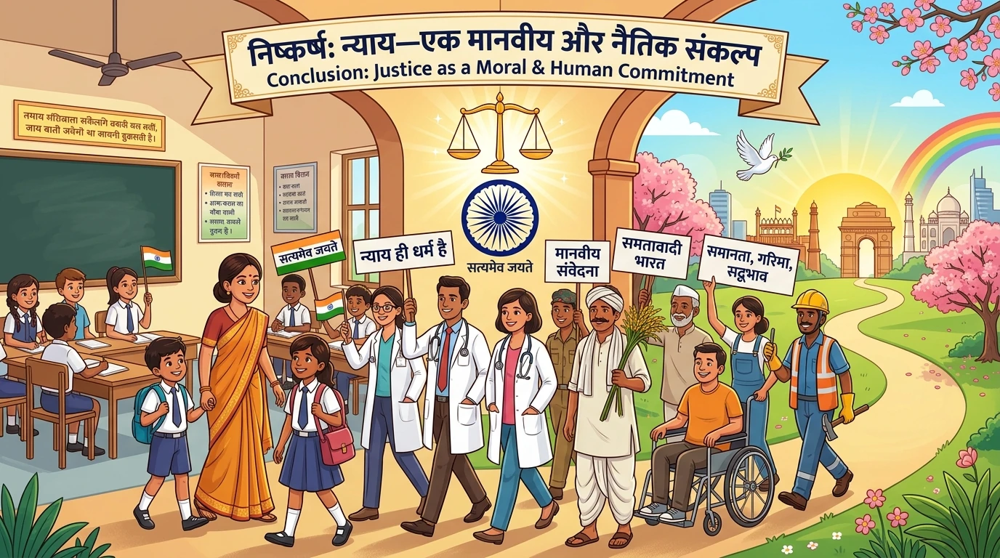
🎨 कार्टून 15.3 विश्लेषण: न्याय—एक मानवीय, सामाजिक और नैतिक संकल्प
अध्याय का सर्वोच्च निष्कर्ष: "सत्यमेव जयते" और "न्याय ही धर्म है" — न्याय केवल किताबी कानून नहीं, बल्कि हमारी सामाजिक अंतरात्मा की आवाज़ है। जब समाज का हर व्यक्ति दूसरों के अधिकारों और गरिमा का सम्मान करता है, तभी एक वास्तविक न्यायपूर्ण, समतावादी और सशक्त भारत का निर्माण होता है।